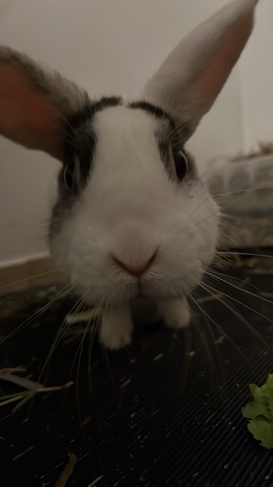

Introduction to the Course
Welcome to Data Literacy!
Who am I?
- I’m Daniel 👋
- Masters in Economics with major in Mathematics
- Data-driven research in various fields
- Dissertation: What shapes demand in the music industry?
- Artist misconduct (#MeToo) increases demand
- Identification of playlists important for artist success
- Organ donation
- Switching from opt-in to opt-out does not increase available organs
- Statistical software (e.g., shrinkDSM)
- Biomarker analysis for cancer research (e.g., FGF8)
- Dissertation: What shapes demand in the music industry?
- Fraud detection for one of the top 5 music markets world-wide
- analysis of \(\sim 200\) billion datapoints

Why am I here?
High-level Goals
- Have fun
- Gain confidence in analysis
- Build a solid foundation for current and future data-based projects
- Learn to transform raw data into (business/economic) insights
- Provide a safe space for exploration
Explicit Goals
- Set up a development environment for data-based projects
- Use extensible and future-proof tools
- Get familiar with R, Quarto, and Git
- Create a flexible, documented, reproducible, and collaborative workflow
- Get familiar with concepts to process, visualize, and analyze data
- Make conscious decisions about each step
- Confidently choose models and methods appropriate for a given situation
- Gain practical experience through conducting a short data analysis
- Grading based on engagement
Non-goals
- Learn a “recipe” for data analysis
- Great for class becaus it’s easy
- Not useful in practice
- Provide a formal introduction to statistics/data-science
- Requires it’s own course
- Focus here on intuition
- Harsh grading
- This is an elective :)
- Discourages exploration
Why are you here?
. . .
Introduce your neigbor to the class
What’s next?
Grading
25% class participation
- Today: upload 3 suggestions to make your neighbor successful
- Every lecture: either participate in class directly or upload a short review to Canvas after class
- 10% for each Saturday lecture, 5% for Wednesday
30% project plan
- Discussion next Wednesday (2024.03.13)
- Due next Friday (2024.03.15)
- Upload to Canvas
- Includes:
- Research question
- A dataset that can be used to answer the research question
- A target audience
- Optionally: a first idea on how to answer the research question
45% project presentation
- Presentations on Wednesday 11 days from today (2023.03.20)
- \(\sim 10 min\) per presentation
- \(\sim 5 min\) discussion for paired groups
- Upload slides to Canvas
- Includes:
- Introduction to the research question
- Short literature review
- Introduction to the data
- Model-free evidence (e.g., visualizations)
- Model-based evidence (e.g., regression analysis)
- Conclustion & Recommendation
- Optional: Short discussion of solutions to challenges faced